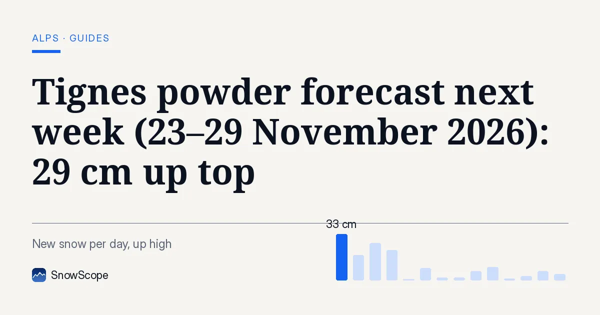
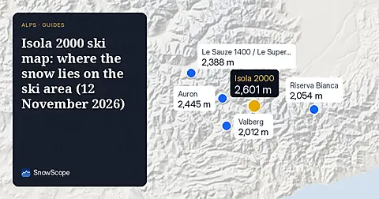

Tignes powder forecast next week (23–29 November 2026): 29 cm up top
Next week brings two distinct snow events to Tignes. The first hits early (Tuesday to Friday), then a quieter spell, then the week of 23–29 November delivers 29 cm near the top around 3300 m, with Thursday 26 as the peak day for fresh powder.
See the live snow forecast for Tignes in the SnowScope appSnow depth, powder alerts and the 3D map, free.

The shape of next week's snow
Thursday 26 November stands out: it alone brings 9 cm (up to 15 cm in the high case) near the top. The rest of the week spreads thinner—1 to 6 cm on most other days—but Wednesday 25, Saturday 28 and Sunday 29 each chip in 6–9 cm at mid-mountain heights.
The weekly total at the top is 29 cm (11–48 cm range). At mid-mountain around 2500 m you get 26 cm (10–38 cm), and at the base near 1700 m it is 23 cm (8–38 cm). That even spread means snow reaches low, a sign the snow line stays well below the lifts.
Where to find the best depth
Depth is safest on the Grande Motte glacier above Val Claret and the high runs off the Grande Motte itself. The cold slopes around the lake also hold snow longer. These are your strongest bets for consistent cover through the week.
Lower runs down to Tignes les Brévières—the lowest corner of the area—will thin faster. The base gets nearly as much snow as the top, but lower slopes catch more sun and wind. Plan your morning runs carefully if you ski low terrain.
Before this week: the foundation layer
The forecast for the current week (17–20 November) is substantial: 98 cm near the top (78–118 cm) and 38 cm at the base. That heavy fall will be in place and stable before 23 November arrives, so you are not starting on bare ice.
Tignes le Lac sits high enough that once November turns, the village itself rarely sees rain. The upper plateau keeps the whole resort cold and dry. This timing advantage matters for a young season.
How the forecast spreads across heights
The gap between top and base is small but real: 29 cm at 3300 m versus 23 cm at 1700 m. This means you are not choosing between a snowy peak and a bare base. Snow cover should be usable across the vertical.
Uncertainty is built in: the top could see anywhere from 11 to 48 cm depending on exactly where and how heavy each system lands. The 29 cm is the middle estimate—a good working number, not a guarantee. The high case of 48 cm would be excellent; the low case of 11 cm would still add to the week's cover but leave thin patches.
Nearby neighbours: a wide tie
Val d'Isère (6 km away) is forecast for 28 cm at the top, Les Arcs (14 km) for 29 cm, La Plagne (17 km) for 28 cm. Tignes sits at 29 cm—the smallest difference. Next week, snow amount will not decide between these resorts.
Height, slope aspect and lift status will matter far more. The choice is about which terrain you want and which lifts are open, not which resort gets more snow.
The day to ski
Thursday 26 November is when to plan your best run. The heaviest snow arrives that day; the morning after is usually best for skiing once the pistes are set and patrols have worked. Expect soft snow on the high terrain and reasonable visibility if conditions align.
Friday 27 November will be drier. If Thursday is too busy or the weather turns, Friday offers a secondary window, though with less fresh snow to chase.
Tips for skiers
- Fresh snow on a young base: check the French avalanche bulletin (BERA) for the massif before any off-piste plan, especially on the high runs and glacier-adjacent slopes.
- Confirm the resort's opening date and which lifts are running before you go. Snow on the mountain does not mean the Grande Motte lift or high routes are open yet.
- Ski high and north-facing when possible this week. The Grande Motte glacier and cold slopes around the lake will hold snow better than sun-exposed lower terrain.
- Plan for 29 cm but keep 48 cm as an upside scenario. If the high case hits, Thursday morning will be memorable.
- Bring layers: the base still gets 23 cm, so lower runs are skiable, but warm clothes help you stay longer on the best high terrain where the depth is.
About these numbers
Resort snow depths are the deepest snow on the resort's upper slopes on the date shown; they are estimates for an area, not a measurement at one point. Forecasts can change. Always read the official avalanche bulletin before going off-piste.
Cite this report
For research, teaching or the press: the numbers and charts are free to reuse under CC BY 4.0 with this citation.
SnowScope (2026), Tignes powder forecast next week (23–29 November 2026): 29 cm up top, https://snowscope.app/blog/en/2026/11/tignes-powder-forecast-next-week-23-29-november-2026.html, accessed 2026-11-16
SnowScope (Atlas Labs). (2026, November 16). Tignes powder forecast next week (23–29 November 2026): 29 cm up top. SnowScope snow reports. https://snowscope.app/blog/en/2026/11/tignes-powder-forecast-next-week-23-29-november-2026.html
BibTeX
@misc{snowscope2026tignespowderforecastnext,
author = {{SnowScope (Atlas Labs)}},
title = {Tignes powder forecast next week (23–29 November 2026): 29 cm up top},
year = {2026},
month = nov,
howpublished = {\url{https://snowscope.app/blog/en/2026/11/tignes-powder-forecast-next-week-23-29-november-2026.html}},
note = {Published 2026-11-16 11:17 UTC; accessed 2026-11-16}
}· CC BY 4.0 · Methods, data and tools →
Tignes: snow and temperature by height, this winter vs last (tools) →
Follow Tignes
Free: a message when fresh snow is coming, and the forecast every morning.
More snow reports

Val d'Isère gets 28 cm next week (10–46 cm range) with Thursday 26 November as the peak snowfall day. Forecast from 16 November 2026.

Isola 2000 snow depths on 11 November 2026: 9 cm at the top, 7 cm mid-mountain, 2 cm at the base. Early-season cover across the Alpine resort.

Alpe Devero has 2 cm at 2201 m on 12 November. The coming week brings 36 cm at the top, 24 cm at mid-mountain and 21 cm at the base.